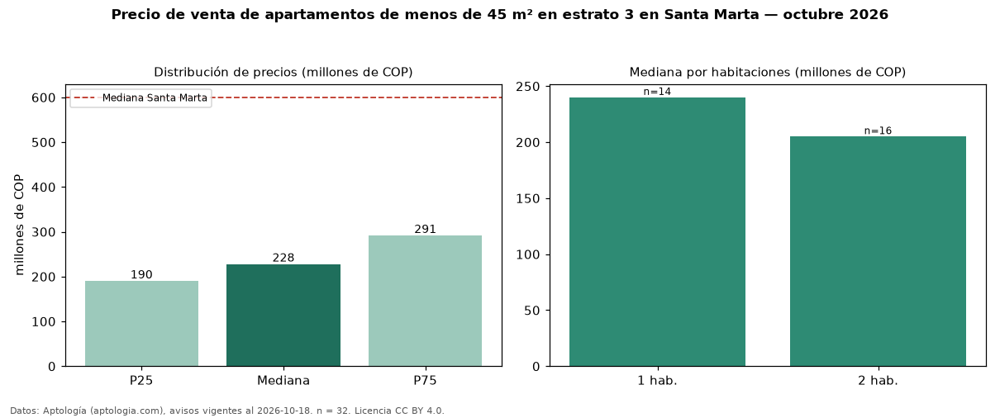

Precio de venta de apartamentos de menos de 45 m² en estrato 3 en Santa Marta — octubre 2026
Con 32 avisos vigentes, el precio mediano de apartamentos de menos de 45 m² en estrato 3 en venta en Santa Marta es COP 228 millones. Eso es 17 % menos que la mediana de los apartamentos en estrato 3 en venta de Santa Marta (COP 275 millones, n = 227); este segmento reúne el 14 % de esos avisos. Por metro cuadrado, la mediana es COP 6,68 millones/m² (n = 32), 43 % por encima de los apartamentos en estrato 3 en venta de Santa Marta (COP 4,65 millones/m²). El área mediana anunciada es 40 m². El segmento con más oferta es el de 2 habitaciones (16 avisos, mediana COP 205 millones); pasar de 1 habitación a 2 habitaciones cambia la mediana −15 %. La administración mediana declarada es COP 223.550 al mes (n = 22). La mediana de todos los apartamentos en venta de Santa Marta es COP 600 millones (−62 % de diferencia). La mitad central de los avisos va de COP 190 millones a COP 291 millones (razón 1,5), una dispersión moderada. Datos: Aptología (aptologia.com), CC BY 4.0 — https://www.aptologia.com/venta/santa-marta. Archivos: PDF, CSV con las cifras y gráfica PNG.

| Avisos únicos | 32 |
|---|---|
| Percentil 25 | COP 189.750.000 |
| Mediana | COP 227.500.000 |
| Percentil 75 | COP 291.250.000 |
| Mediana por m² | COP 6.678.964 |
Fuente: avisos vigentes de portales inmobiliarios recopilados por Aptología, deduplicados (mínimo 30 avisos únicos por celda). Precios pedidos, no cerrados. Fecha: 2026-10-18.